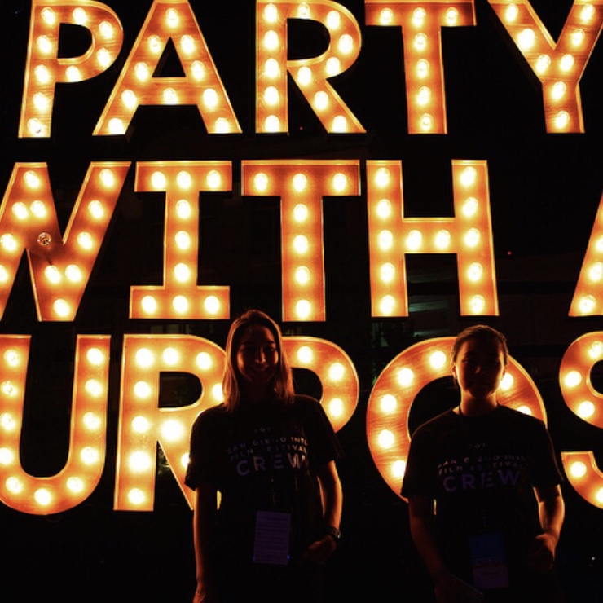
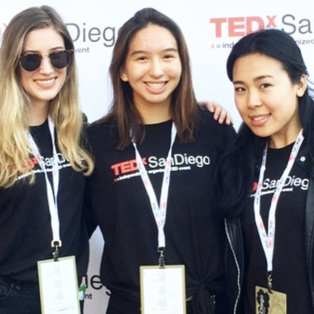
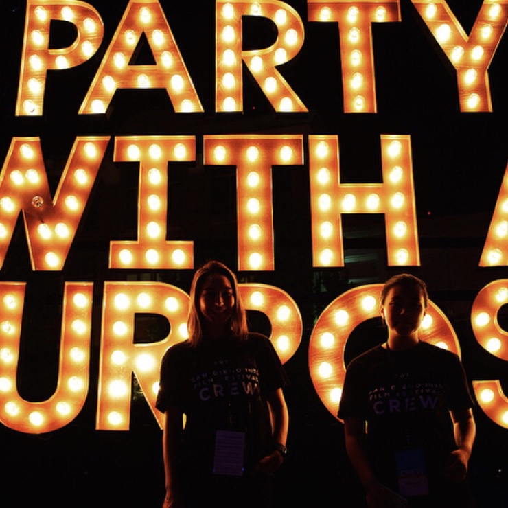
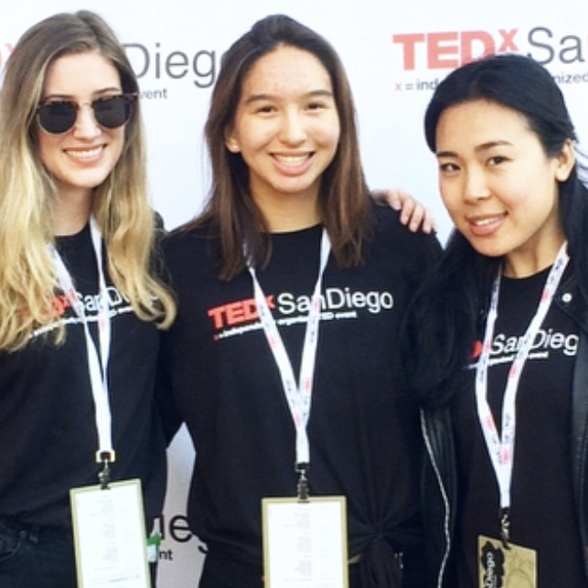

Amanda K. Goldstein
I'm a Team USA competitive figure skater and have been competing since I was four years old. My skating career has brought me all over the country, and last year I competed in Paris, France. I started coaching towards the end of last summer and enjoy sharing my passion for skating with my students. My coaching style emphasises coordination, balance, strength, and flexibility, and I choreograph programs to showcase my students’ skills while also challenging each skater.
As a figure skater, I’m known for my flow across the ice and for having advanced spins. I work hard to utilize the space, experiment with techniques, and create an enjoyable performance for the audience by using movement to tell a story. My knack for spatial awareness and visual composition is what brought me to study film. I started by filming and photographing other skaters, and quickly became aware of how a subtle shift in angle can create a new perspective and reshape the viewing experience. I love testing the boundaries of photography by experimenting with framing, movement, and focus.
When I'm not skating or coaching, I spend my time creating memories with my friends and family by taking photos and videos of them. I enjoy doing this because it allows me to express my thoughts and feelings through art, rather than words. Every day offers new opportunities to expand my skill set and apply what I’ve learned to my photography. I have a passion for visual arts, and I want to advance in this field as a way to communicate ideas and share stories with the world.
One of my favorite quotes comes from Walter Hagen, a professional golfer who was considered one of the top athletes of the 1920s. He said: "Don't hurry. Don't worry. You're only here for a short visit. So don't forget to stop and smell the roses." I love this quote because it reminds me to take a break and breathe when times get hard, and this is the attitude I take towards accomplishing my goals. Most of my interests involve a lot of hard work and dedication, and I strive to stay competitive. However, the only way to sustain this is to make sure to enjoy the journey.
Experience
Figure Skating Coach
• Work privately with skaters to improve skating skills, spin technique, and choreography
• Identify strengths and weaknesses, and set goals and benchmarks for students
• Help students perfect details of their routines and prepare for competitions
Volunteered
• Worked with a team to help the San Diego International Film Festival run smoothly
• Responsible for checking-in audience members and guiding them to their assigned seat
Education
UC Riverside
Portfolio






 